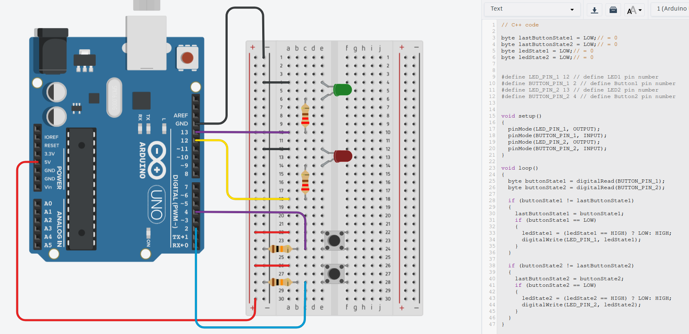
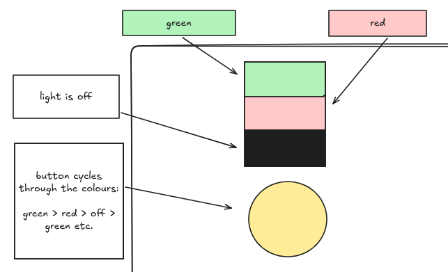
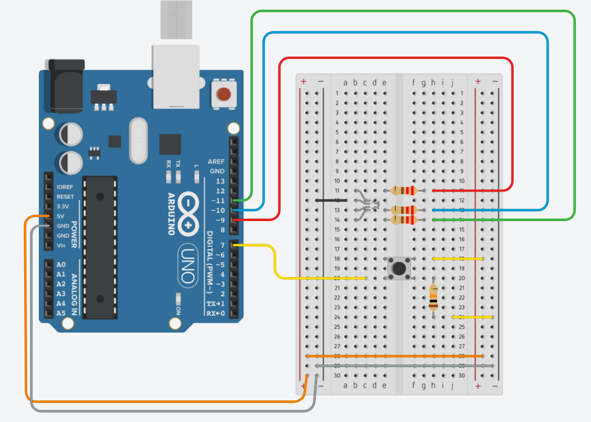
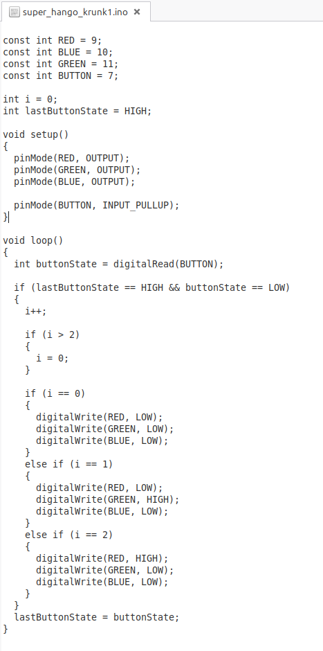
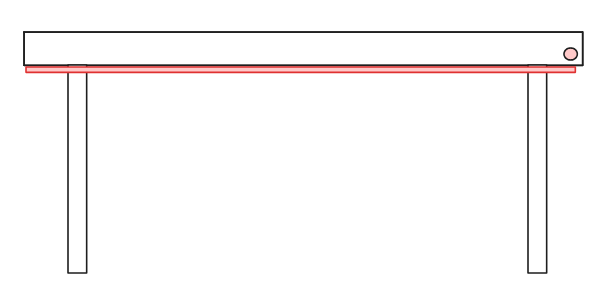
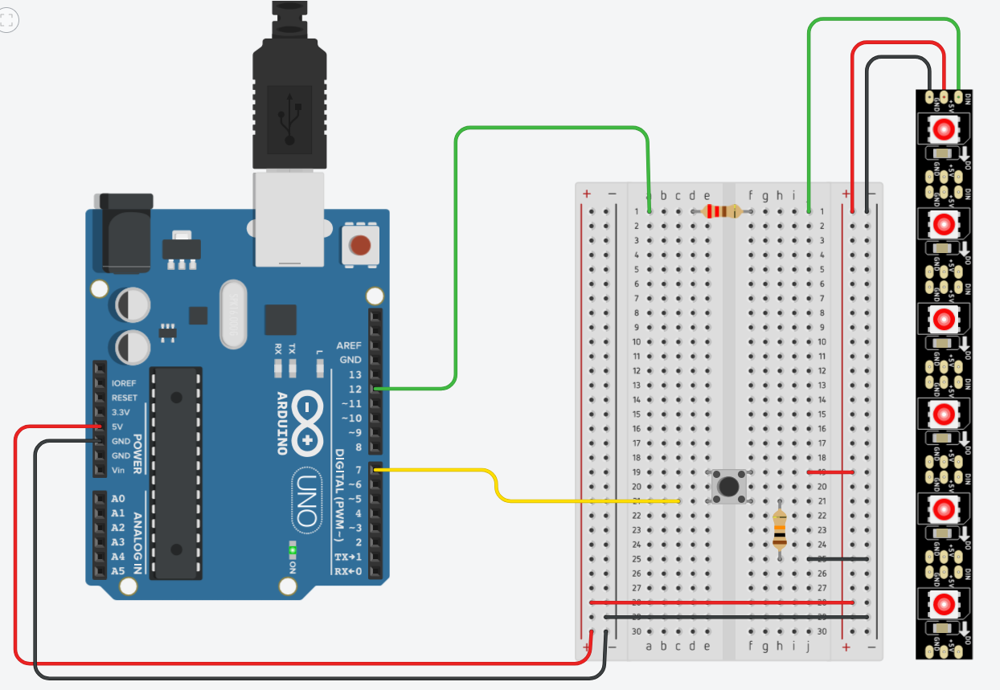
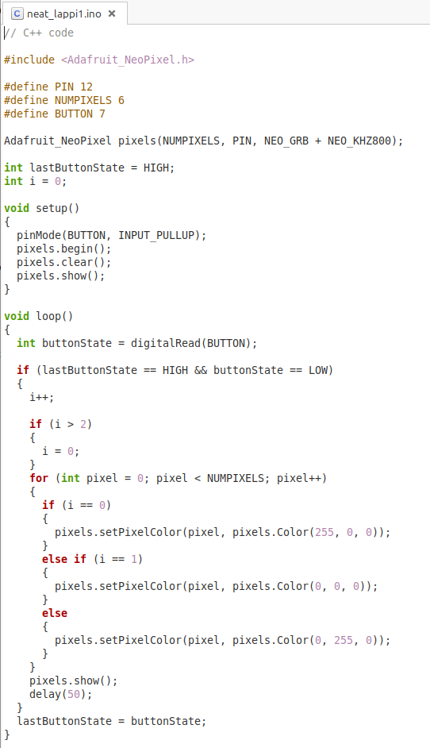

Circuits, The Internet of Things, Embedded Systems
I never did make those alterations, but I did get a brief introduction to programming chips, which I was completely clueless in, which started my interest in electronics, or embedded systems specifically. I mentioned an interest in making a simple desk LED, which I would turn red when I'm working and green when I'm not. (I could just order a colour-changing LED from anywhere, but then I wouldn't learn how to programme and make it myself). Adrian gave me some helpful insights and tips to get started.
I used some CAD Software called TinkerCAD to make some designs.
Here's how far I got:

This circuit has two separate buttons for two separate LEDs, one red and one green.
This was a starting point, but ideally, I wanted one LED that would cycle through red and green. Both for the convenience of having one button, and to avoid the confusion of having both the red and green light on simultaneously. I also decided that if the button could also turn the light off, that would be ideal.
Here's a very professional sketch of what I wanted:

And here's the circuit and code I made for that:


Now we have the circuit and code for an RGB LED, with a button that cycles through red, green, and 'off' - i.e., no colour.
Next I wanted to adapt this to an LED strip, with the idea that I could place the LED strip somewhere on my wall or under my desk, and the button for it on my desk.
Like so:

This is the circuit and code I made for the LED strip:


Programming the LED strip was slightly more challenging than a single LED as I included the Adafruit Neopixel library and had to ensure that the code cycles through each LED correctly.
Considering I have (or had?) no experience in electronics or designing circuits, or much experience programming in C, I am happy with my progress so far.
Next, I should learn more about delays and their significance, and I don't really understand resistor values as much as I'd like. I should also probably learn how to solder and fetch some materials (probably from DOES).
TBC!